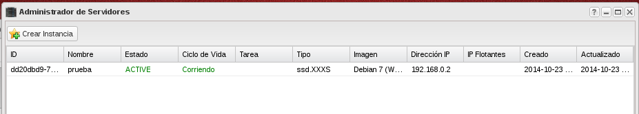
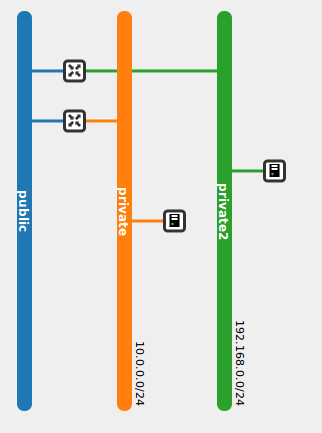

Terminología
- Red: Red Dominio aislado de capa 2. Sería el
equivalente a una VLAN. Las redes externas solo pueden ser definidas por
el administrador.
- Subred: Bloque de direcciones IPv4 o IPv6 que se
asignan a las máquinas virtuales que se conectan a ella.
- Router: Dispositivo de capa 3 para conectar redes.
- Puerto: Puerto virtual de un switch o router.
- IP fija: Dirección IP con la que se crean una
instancia en una red y que se utiliza para comunicacion interna. La
dirección IP fija no cambia durante la vida de la instancia.
- IP flotante: Direccion IP asociada a una instancia en
un momento dado para poder acceder a ella desde fuera. Una IP flotante
puede asignarse a otra instancia diferente cuando se estime oportuno.
Gestión de Redes es StackOps Portal
Creación de redes

Creación de una subred

Creación de un router

Conectar red al router (Enalzar subred)

Creación una instancia en la nueva red

IP fija en la nueva red

Posibles topologías de red
Dos redes conectadas a un router

Dos redes con dos router independientes

Dos redes conectada por un router

Balanceador de Carga
- El balanceador de carga proporciona un servicio para dividir de manera equitativa, a través de un algoritmo, el tráfico recibido en servidores virtuales que atienden una aplicación.
- La elasticidad es la propiedad que nos permite de una manera automática crear o destruir servidores según nuestras necesidades de carga.
Demostración
- Crear una red privada y una subred asociada
- Crear un router, conectarlo a la red externa y a la red anterior
- Crear una instancia en la nueva red
- Crear un balanceador de carga